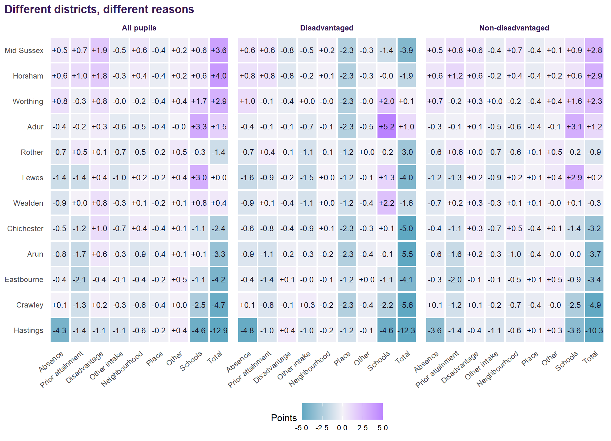
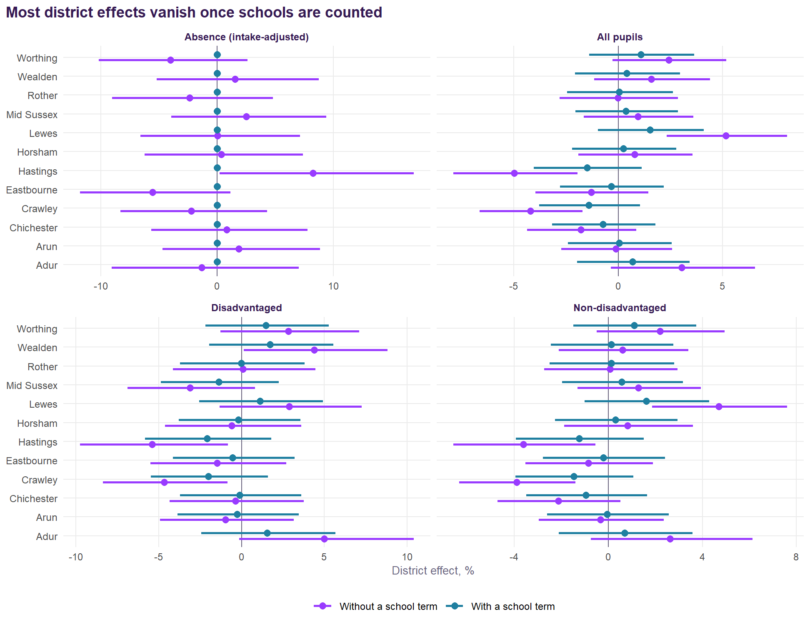

| District | County | Schools | FSM % | Att 8 | Att 8 disadv. | Att 8 non-disadv. | Gap | VA v2.1 | VA disadv. | VA non-disadv. | VA girls / boys | Absence vs intake | Above / below |
|---|---|---|---|---|---|---|---|---|---|---|---|---|---|
| Adur | West Sussex | 2 | 19.9 | 48.4 (80th) | 40.0 (72nd) | 50.6 (98th) | 10.6 (194th) | +2.7 | +2.3 | +2.3 | +2.2 / +2.9 | -0.6 | 1 / 0 |
| Lewes | East Sussex | 6 | 21.5 | 45.4 (155th) | 32.2 (234th) | 49.0 (142nd) | 16.7 (21st) | +2.3 | +0.1 | +2.3 | +1.1 / +3.0 | +0.2 | 4 / 0 |
| Worthing | West Sussex | 6 | 17.6 | 49.0 (66th) | 35.8 (146th) | 51.7 (70th) | 15.9 (33rd) | +1.2 | -0.3 | +1.0 | +0.5 / +2.2 | -0.7 | 2 / 1 |
| Wealden | East Sussex | 6 | 20.0 | 45.1 (162nd) | 34.0 (199th) | 47.6 (192nd) | 13.6 (101st) | +0.6 | +0.9 | +0.2 | +0.5 / +0.6 | +0.3 | 3 / 2 |
| Mid Sussex | West Sussex | 7 | 12.2 | 50.3 (53rd) | 35.5 (155th) | 52.3 (58th) | 16.9 (18th) | +0.1 | -2.7 | +0.3 | +0.3 / -0.4 | -0.1 | 0 / 0 |
| Horsham | West Sussex | 6 | 11.9 | 49.6 (58th) | 34.6 (188th) | 51.7 (72nd) | 17.1 (16th) | -0.0 | -1.7 | -0.1 | +0.5 / +0.1 | -0.3 | 0 / 1 |
| Arun | West Sussex | 6 | 18.6 | 43.1 (215th) | 31.2 (248th) | 45.8 (233rd) | 14.6 (70th) | -0.1 | -1.6 | -0.4 | -0.2 / -0.1 | +0.1 | 2 / 1 |
| Rother | East Sussex | 5 | 25.6 | 45.4 (153rd) | 34.5 (193rd) | 49.1 (138th) | 14.6 (66th) | -0.2 | -0.8 | -0.1 | -0.0 / -0.4 | +0.1 | 1 / 2 |
| Eastbourne | East Sussex | 6 | 30.0 | 42.7 (226th) | 33.2 (218th) | 47.0 (208th) | 13.9 (91st) | -1.1 | -1.6 | -0.8 | -0.9 / -1.0 | -0.2 | 0 / 2 |
| Chichester | West Sussex | 6 | 17.8 | 43.6 (208th) | 31.0 (252nd) | 46.0 (229th) | 15.0 (56th) | -1.3 | -1.6 | -1.6 | -1.3 / -1.3 | -0.2 | 0 / 2 |
| Crawley | West Sussex | 7 | 23.4 | 42.1 (235th) | 30.7 (255th) | 45.3 (240th) | 14.6 (69th) | -2.3 | -3.2 | -2.4 | -2.3 / -2.0 | -0.4 | 0 / 4 |
| Hastings | East Sussex | 3 | 35.1 | 37.8 (263rd) | 29.5 (262nd) | 42.4 (260th) | 13.0 (119th) | -3.3 | -3.5 | -2.7 | -3.0 / -3.1 | +2.5 | 0 / 2 |
The districts of East and West Sussex
All twelve districts side by side on Value Added v2.1, with absence against intake, the district test and practice.
Summary
- Value added v2.1 ranges from +2.7 points in Adur to -3.3 in Hastings, averaged over each district’s schools.
- Disadvantaged pupils’ value added is below zero in 9 of the twelve districts.
- Absence against intake runs from +2.5 points in Hastings to -0.7 in Worthing.
- Crawley, Hastings, Lewes and Wealden differ from their county on the v2.1 model; none survives each school’s own record.
- Suspensions run from 7.6 to 77.8 episodes per 100 pupils (England 21.2).
The districts side by side
What explains each district’s results

Is there a district effect?

- Hastings: all pupils (-5.0%), disadvantaged (-5.4%), non-disadvantaged (-3.6%) and absence (+8.2%) without a school term; none survives a school term.
- Lewes: all pupils (+5.2%) and non-disadvantaged (+4.7%) without a school term; none survives a school term.
- Wealden: disadvantaged (+4.4%) without a school term; none survives a school term.
- Crawley: all pupils (-4.2%), disadvantaged (-4.7%) and non-disadvantaged (-3.9%) without a school term; none survives a school term.
Absence and practice
| District | County | Absence vs intake | Reduced timetable % | Suspension episodes per 100 | Pupils suspended per 100 |
|---|---|---|---|---|---|
| Hastings | East Sussex | +2.5 | 0.11 | 77.8 | 19.8 |
| Wealden | East Sussex | +0.3 | 0.56 | 21.9 | 7.3 |
| Lewes | East Sussex | +0.2 | 0.30 | 18.7 | 6.7 |
| Rother | East Sussex | +0.1 | 0.34 | 17.1 | 6.8 |
| Eastbourne | East Sussex | -0.2 | 0.45 | 24.9 | 8.0 |
| Arun | West Sussex | +0.1 | 0.27 | 19.3 | 6.5 |
| Mid Sussex | West Sussex | -0.1 | 0.54 | 12.5 | 4.8 |
| Chichester | West Sussex | -0.2 | 0.45 | 19.8 | 7.0 |
| Horsham | West Sussex | -0.3 | 0.75 | 13.6 | 5.3 |
| Crawley | West Sussex | -0.4 | 0.60 | 18.5 | 7.0 |
| Adur | West Sussex | -0.6 | 0.38 | 7.6 | 3.4 |
| Worthing | West Sussex | -0.7 | 0.72 | 18.4 | 6.1 |
| England | +0.0 | 0.29 | 21.2 | 7.3 |
District by district
East Sussex
Eastbourne (6 schools). Value added v2.1 -1.1 for all pupils, -1.6 for disadvantaged pupils, -0.9 for girls and -1.0 for boys; 0 schools significantly above expectation and 2 below. Absence below what the intake predicts by 0.2 points. Attainment 8 42.7, 226th of 264 districts. No district effect. Read the Eastbourne page.
Hastings (3 schools). Value added v2.1 -3.3 for all pupils, -3.5 for disadvantaged pupils, -3.0 for girls and -3.1 for boys; 0 schools significantly above expectation and 2 below. Absence above what the intake predicts by 2.5 points. Attainment 8 37.8, 263rd of 264 districts. Its district effect disappears once each school’s record is counted. Read the Hastings page.
Lewes (6 schools). Value added v2.1 +2.3 for all pupils, +0.1 for disadvantaged pupils, +1.1 for girls and +3.0 for boys; 4 schools significantly above expectation and 0 below. Absence above what the intake predicts by 0.2 points. Attainment 8 45.4, 155th of 264 districts. Its district effect disappears once each school’s record is counted. Read the Lewes page.
Rother (5 schools). Value added v2.1 -0.2 for all pupils, -0.8 for disadvantaged pupils, -0.0 for girls and -0.4 for boys; 1 schools significantly above expectation and 2 below. Absence above what the intake predicts by 0.1 points. Attainment 8 45.4, 153rd of 264 districts. No district effect. Read the Rother page.
Wealden (6 schools). Value added v2.1 +0.6 for all pupils, +0.9 for disadvantaged pupils, +0.5 for girls and +0.6 for boys; 3 schools significantly above expectation and 2 below. Absence above what the intake predicts by 0.3 points. Attainment 8 45.1, 162nd of 264 districts. Its district effect disappears once each school’s record is counted. Read the Wealden page.
West Sussex
Adur (2 schools). Value added v2.1 +2.7 for all pupils, +2.3 for disadvantaged pupils, +2.2 for girls and +2.9 for boys; 1 schools significantly above expectation and 0 below. Absence below what the intake predicts by 0.6 points. Attainment 8 48.4, 80th of 264 districts. No district effect. Read the Adur page.
Arun (6 schools). Value added v2.1 -0.1 for all pupils, -1.6 for disadvantaged pupils, -0.2 for girls and -0.1 for boys; 2 schools significantly above expectation and 1 below. Absence above what the intake predicts by 0.1 points. Attainment 8 43.1, 215th of 264 districts. No district effect. Read the Arun page.
Chichester (6 schools). Value added v2.1 -1.3 for all pupils, -1.6 for disadvantaged pupils, -1.3 for girls and -1.3 for boys; 0 schools significantly above expectation and 2 below. Absence below what the intake predicts by 0.2 points. Attainment 8 43.6, 208th of 264 districts. No district effect. Read the Chichester page.
Crawley (7 schools). Value added v2.1 -2.3 for all pupils, -3.2 for disadvantaged pupils, -2.3 for girls and -2.0 for boys; 0 schools significantly above expectation and 4 below. Absence below what the intake predicts by 0.4 points. Attainment 8 42.1, 235th of 264 districts. Its district effect disappears once each school’s record is counted. Read the Crawley page.
Horsham (6 schools). Value added v2.1 -0.0 for all pupils, -1.7 for disadvantaged pupils, +0.5 for girls and +0.1 for boys; 0 schools significantly above expectation and 1 below. Absence below what the intake predicts by 0.3 points. Attainment 8 49.6, 58th of 264 districts. No district effect. Read the Horsham page.
Mid Sussex (7 schools). Value added v2.1 +0.1 for all pupils, -2.7 for disadvantaged pupils, +0.3 for girls and -0.4 for boys; 0 schools significantly above expectation and 0 below. Absence below what the intake predicts by 0.1 points. Attainment 8 50.3, 53rd of 264 districts. No district effect. Read the Mid Sussex page.
Worthing (6 schools). Value added v2.1 +1.2 for all pupils, -0.3 for disadvantaged pupils, +0.5 for girls and +2.2 for boys; 2 schools significantly above expectation and 1 below. Absence below what the intake predicts by 0.7 points. Attainment 8 49.0, 66th of 264 districts. No district effect. Read the Worthing page.